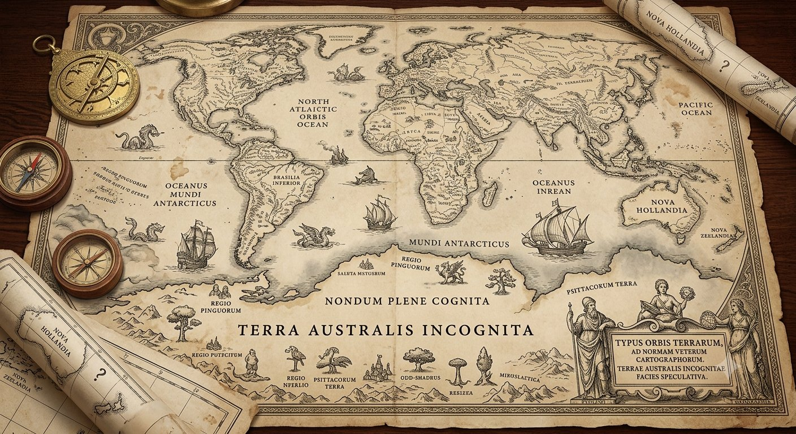

The collected mythologies of TerAustralis Incognita — the deep knowledge, transmissions, and stories that define the sovereign vision. INCOGNITA LATTICE V2.0

The foundational mythology of TerAustralis Incognita
Songs and signals from the deep black
Tales of witnessing, connection, and being seen
Interactive command interface — boot the system, navigate the Starline, collect the Five Keys
117 pieces of speculative futures art from the TerAustralis Incognita mythos
Real-time visualization of active learning models monitoring emotional intelligence